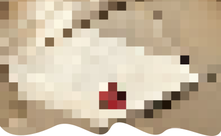
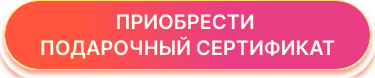
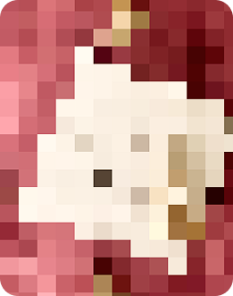
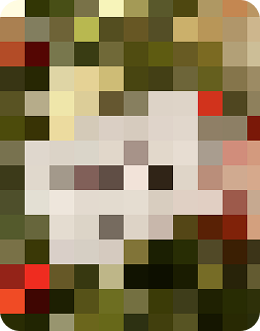
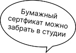

40 МИНУТ
3700 рублей
средняя продолжительность съёмки, подойдёт для смены нескольких образов или семейной съёмки

Не знаете, что подарить? Подарочный сертификат — это всегда беспроигрышный вариант. Дарите не просто вещь, а возможность выбрать то, что действительно хочется. Приятный сюрприз, который точно не разочарует.

средняя продолжительность съёмки, подойдёт для смены нескольких образов или семейной съёмки
подойдёт для больших компаний, семейной съёмки или для съёмки во множестве образов





После покупки сертификата сразу доступна его электронная версия. Бумажный вариант можно забрать в студии в любой день и время.
Записаться на съёмку по сертификату можно онлайн через этот сайт на главной странице. Бронирование съёмки происходит после полной оплаты.
Съёмка по сертификату проходит, как обычная съёмка: в студии вас встретит администратор и проведёт инструктаж. Количество кадров неограниченно.